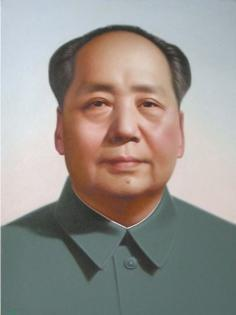
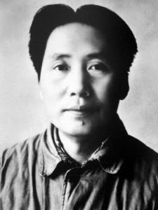
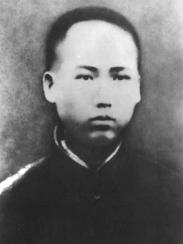
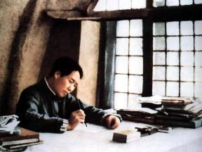
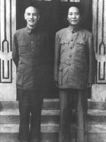
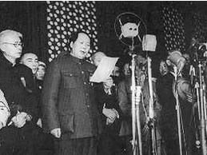

Mao Zedong

Mao Zedong (December 26, 1893-September 9, 1976) was born under the pseudonym Ziren. From Xiangtan, Hunan. He is one of the founders of the Communist Party of China and the main founder and leader of the People's Liberation Army and the People's Republic of China. From 1949 to 1976, Mao Zedong served as the supreme leader of the People's Republic of China. People call him "Chairman Mao". China's First Chairman. His contributions to the development of Marxism-Leninism, military theory and the theory of the Communist Party are called Mao Zedong Thought. Mao Zedong is regarded as one of the most important figures in modern world history, and Time magazine also rated him as one of the 100 most influential people in the 20th century.
Biography


Mao Zedong was born in Xiangtan, Hunan. Born in a peasant family on December 26, 1893. After the Revolution of 1911 broke out, he became a soldier for half a year in the uprising army. From 1914 to 1918, he studied in Hunan No.1 Normal School. On the eve of graduation, he organized revolutionary organizations such as Cai Hesen and Xinmin Society. Before and after the May 4th Movement, they contacted and accepted Marxism. In November 1920, they established a communist organization in Hunan. In July 1921, he attended the first national congress of the communist party of China and later served as secretary of the Hunan district Committee of the communist party of China, leading the workers' movement in Changsha, Anyuan and other places. In June 1923, he attended the "three major conferences" of the CPC and was elected as the central executive Committee to participate in the central leadership. After the Kuomintang-Communist cooperation in January 1924, he was elected as an alternate member of the Central Executive Committee at the first and second National Congresses of the Kuomintang. He served as the Acting Director of the Propaganda Department of the Kuomintang Central Committee in Guangzhou, edited the Political Weekly and hosted the 6th Farmers' Movement Institute. In November 1926, he was appointed secretary of the CPC central Committee's peasant movement Committee.
from the winter solstice of 1925 to the spring of 1927, he successively published works such as "analysis of various classes in Chinese society" and "investigation report of Hunan peasant movement". he pointed out the important position of the peasant problem in the Chinese revolution and the extreme importance of the proletariat in leading the peasant struggle, and criticized Chen Duxiu's right-wing thought.
After the overall breakdown of Kuomintang-Communist cooperation, at the emergency meeting of the Central Committee of the Communist Party of China in August 1927, he put forward the idea that "political power is obtained from guns", that is, seizing political power by revolutionary armed forces, and was elected as an alternate member of the Political Bureau of the Central Committee. After the meeting, he went to Hunan and Jiangxi borders to lead the autumn harvest uprising. Then he led the uprising troops to Jinggangshan to launch the agrarian revolution and establish the first rural revolutionary base area. In April 1928, he joined forces with the uprising troops led by Zhu de to form the fourth army of the revolutionary army of workers and peasants (soon renamed the red army). he was the party representative and secretary of the former enemy Committee. The Communist Party of China, with him as its main representative, based on China's reality, developed armed struggle in the rural areas where the Kuomintang regime was relatively weak and started the road of encircling the cities with the countryside and finally seizing the cities and the national regime. Why can he exist in "China's Red Regime"? "A single spark can start a prairie fire" and other works on this issue in theory.
in may 1930, he wrote "against bookishness" and put forward the famous judgment of "no investigation, no right to speak". In August, the First Front Army of the Red Army was established as the chief political member. On November 7, 1931, the Interim Government of chinese soviet republic was established in Ruijin, Jiangxi Province and was elected chairman. In January 1933, he was elected a member of the Political Bureau of the CPC Central Committee. Since the end of 1930, the Red First Army led by Zhu De has defeated the Kuomintang army in many "encirclement and suppression" campaigns. After the "left" line leading group represented by Wang Ming entered the central revolutionary base area, Mao Zedong was excluded from the leadership of the party and the red army, which led to the defeat of the red army's fifth counter-campaign against "encirclement and suppression".
In October 1934, he took part in the Red First Army Long March. On the way to the Long March, in January 1935, the Political Bureau of the CPC Central Committee held an enlarged meeting (Zunyi Meeting) in Guizhou, establishing a new central leadership represented by Mao Zedong. In October, the central Committee of the communist party of China and the red army arrived in northern Shaanxi, ending the long March. In December, a report entitled "On Strategies Against Japanese Imperialism" was made, clarifying the anti-Japanese national united front policy. In October 1936, the three main forces of the Red Army joined forces. In December 1936, Zhou Enlai and others promoted a peaceful settlement of the Xi 'an Incident, which became the pivot of the current political situation from civil war to the second Kuomintang-Communist cooperation and joint resistance to Japan. In the same month, he wrote "Strategic Issues in China's Revolutionary War". In the summer of 1937, he wrote "On Practice" and "On Contradiction". After the Anti-Japanese War began, the CPC Central Committee headed by him adhered to the principle of independence and autonomy in the United Front, worked hard to mobilize the masses, launched guerrilla warfare behind enemy lines, and established many large anti-japanese base areas. In October 1938, the guiding principle of "sinicization of Marxism" was put forward at the sixth plenary session of the enlarged sixth central Committee of the communist party of China. During the Anti-Japanese War, he published important works such as "On Protracted War", "The Communists" First Issue "and" On New Democracy ". In February 1942, he led the whole party to carry out the rectification movement to correct subjectivism and sectarianism, thus enabling the whole party to further grasp the basic direction of combining the universal truth of Marxism-Leninism with the concrete practice of the Chinese revolution and laying the ideological foundation for the victory of the Anti-Japanese War and the national revolution. In March 1943, he was elected chairman of the Political Bureau of the CPC Central Committee. In May, he led the army and the people in the base area to carry out the production campaign and passed through serious economic difficulties.
From April to June 1945, he presided over the 7th national congress of the communist party of China and gave a report on the coalition government. The congress formulated the strategy of "unleashing the masses, strengthening the people's strength, defeating the Japanese invaders, liberating the people of the whole country and building a new democratic China" under the leadership of the communist party. Mao Zedong Thought was confirmed as the guiding ideology of the CPC at this conference. He served as chairman of the CPC Central Committee from the First Plenary Session of the Seventh Central Committee until his death on September 9, 1976.
after the victory of the anti-Japanese war, Chiang kai-shek proposed a "tit-for-tat" policy of struggle against the reality that he was trying to destroy the communist party and its armed forces. In August 1945, he went to Chongqing to negotiate with Chiang Kai-shek, demonstrating the desire of the Chinese Communist Party to strive for domestic peace.
after Chiang kai-shek launched a full-scale civil war in the summer of 1946, Mao Zedong, Zhu de and Zhou Enlai led the Chinese people's liberation army to carry out active defense, concentrating superior forces and annihilating the enemy. From March 1947 to March 1948, he moved to northern Shaanxi with Zhou Enlai and Ren Bishi to command the northwest battlefield and the national liberation war. In the summer of 1947, the Chinese People's Liberation Army shifted from strategic defense to strategic attack. Under the leadership of the Party Central Committee headed by him, it overthrew the Kuomintang government through the three major campaigns of Liaoshen, Huaihai, Pingjin and the crossing of the Yangtze River in April 1949. In March 1949, he presided over the Second Plenary Session of the Seventh Central Committee of the Communist Party of China and made an important report. He decided to shift the focus of the Party's work from the countryside to the cities. He laid down the Party's basic policies after the country's victory. He called on the whole Party to maintain a modest, prudent, arrogant and impetuous style and to continue to work hard. On July 1, the "On the People's Democratic Dictatorship" was published, setting out the nature of the people's Republic's political power and its basic policies at home and abroad.
On October 1, 1949, the People's Republic of China was established and he was elected chairman of the Central People's Government. In June 1950, he presided over the Third Plenary Session of the Seventh Central Committee of the Communist Party of China and put forward the general task of fighting for a basic improvement in the country's financial and economic situation. In October, the Central Committee of the Communist Party of China, headed by U.S. troops who invaded the Democratic People's Republic of Korea and threatened northeast China, decided to carry out the War to Resist U.S. Aggression and Aid Korea. From 1950 to 1952, under his leadership, he carried out land reform, suppressed counter-revolution and other democratic reforms, and carried out the "three evils" campaign against corruption, waste and bureaucracy and the "five evils" campaign against bribery, tax evasion, theft and swindling of state property, cutting corners on work and stealing economic intelligence. In June 1953, following his suggestion, the CPC Central Committee announced the party's general line during the transitional period and began to systematically carry out socialist industrialization and socialist transformation of private ownership of means of production. In September 1954, the first session of the First National People's Congress passed the Constitution of the People's Republic of China, which he presided over and drafted. He was elected as the first chairman of the People's Republic of China at this session until April 1959.
in April 1956, he made a speech on "ten major relations". this speech made some preliminary explorations on the road of building socialism suitable for China's national conditions. Then, at the enlarged meeting of the Political Bureau of the CPC Central Committee, the policy of "letting a hundred flowers blossom and a hundred schools of thought contend" was put forward. In September, the socialist transformation of private ownership of the means of production was basically completed. The Communist Party of China held its eighth National Congress, pointing out that the main task of the nation's people has changed to concentrate on developing social productive forces. However, this policy was not seriously implemented later, which led to a series of mistakes and setbacks in guiding the work in the future. In February 1957, he made a speech on "correctly handling contradictions among the people" and put forward the theory of correctly distinguishing and handling two kinds of contradictions of different natures between ourselves and the enemy and among the people in socialist society.
In July 1957, a request was made to "create a political situation in which there is concentration, democracy, discipline, freedom, unity of will, personal ease of mind and liveliness." In May 1958, the "Great Leap Forward" and the rural people's communalization movement were launched. In July 1959, he presided over the Lushan meeting. He wanted to correct the perceived mistakes, but he mistakenly launched a criticism of Peng dehuai in the late part of the meeting and launched an "anti-rightist" struggle in the whole party after the meeting. From the winter of 1960 to the beginning of 1965, under the leadership of the CPC Central Committee headed by him, the government implemented the policy of "adjusting, consolidating, enriching and improving" the national economy, initially correcting the mistakes in the "Great Leap Forward" and the people's communalization movement, and enabling the national economy to recover and develop relatively rapidly. During this period, he put forward a series of measures to initially correct "left" mistakes in rural work and other areas. However, at the 10th plenary session of the 8th CPC Central Committee held in September 1962, he expanded and absolutized the class struggle existing within a certain range in the socialist society, developing his view that the contradiction between the proletariat and the bourgeoisie, which he put forward after the anti-rightist struggle in July 1957, is still the main contradiction in Chinese society. From 1963 to 1965, the socialist education movement in rural and urban areas was launched, and the emphasis of the movement was put on the consolidation of the so-called "capitalist establishment within the party". From the 1950s onwards, the great power doctrine pursued by the leaders of the Communist Party of the Soviet Union and his attempts to interfere in and control China have been resolutely fought under his leadership.
in may 1966, he launched the "cultural revolution" movement due to his extreme estimation of the domestic class struggle situation. this movement became especially violent due to the manipulation of Lin Biao and Jiang Qing, two counter-revolutionary groups, which greatly exceeded his expectation and his control, and even lasted for ten years, causing serious damage and losses to many aspects of China. In the "cultural revolution", Mao Zedong also stopped and corrected some specific mistakes. He led the struggle to crush Lin Biao's counter-revolutionary clique and prevented Jiang Qing and Zhang Chunqiao from winning the highest leadership.
died in Beijing on September 9, 1976 at the age of 83.